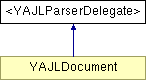

<YAJLParserDelegate> Protocol Reference
Inheritance diagram for <YAJLParserDelegate>:

Public Member Functions | |
| (void) | - parserDidStartDictionary: |
| (void) | - parserDidEndDictionary: |
| (void) | - parserDidStartArray: |
| (void) | - parserDidEndArray: |
| (void) | - parser:didMapKey: |
| (void) | - parser:didAdd: |
Member Function Documentation
| - (void) parser: | (YAJLParser *) | parser | ||
| didAdd: | (id) | value | ||
Did add value.
- Parameters:
-
parser Sender value Value of type NSNull, NSString or NSNumber
The documentation for this protocol was generated from the following file:
- extThree20JSON/Vendors/YAJL/YAJLParser.h